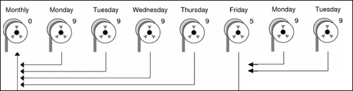
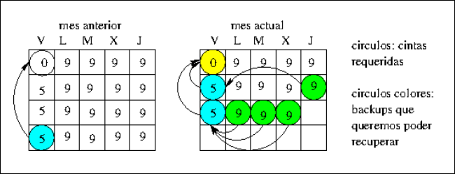
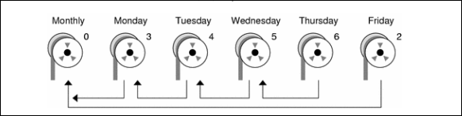
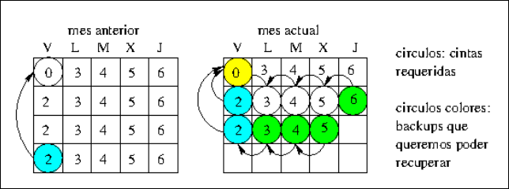

ASR · curso 3
4. Copias de Seguridad · ASR
El trabajo del administrador no es evitar que los desastres ocurran (eso es imposible), sino asegurar que se puede recuperar la información cuando ocurran.
Causas de pérdida de datos:
- Error humano (borrado accidental).
- Fallos técnicos (disco duro roto, corrupción de software).
- Catástrofes (incendio, inundación, robo).
- Malware (Ransomware, ataques hackers).
4.1 Los Tres Pilares del Backup
Para montar un sistema de copias necesitamos definir tres cosas: ¿Dónde?, ¿Cómo? y ¿Cuándo?
Medios de almacenamiento (¿Dónde?)
| Medio | Capacidad | Uso ideal |
|---|---|---|
| Cintas (LTO) | Muy alta (18TB+ en LTO-9) | Estándar empresarial. Son baratas por TB y duraderas. |
| Librerías Robotizadas | Exabytes | Grandes Centros de Datos. Un robot mueve las cintas automáticamente. |
| Discos Duros (HDD) | Media/Alta (TB) | Pequeñas empresas o copias rápidas locales. |
| Discos Ópticos | Baja (DVD/BluRay) | Casi en desuso, salvo para archivo a muy largo plazo (Cold Storage). |
| Nube (Cloud) | "Ilimitada" | Copias externas (off-site). Ojo: Depende de tu velocidad de internet y de la legislación de protección de datos. |
El mecanismo de Copia (¿Cómo?)
Existen dos filosofías técnicas para copiar los datos:
Copia Fichero a Fichero (Nivel Lógico):
- El programa pide al Sistema Operativo: "Dame el archivo
foto.jpg", luego "Dametexto.txt". - Ventaja: Puedes recuperar un solo archivo fácilmente.
- Desventaja: Lento si hay millones de archivos pequeños.
- Herramienta:
tar.
Copia de Imagen (Nivel físico/bloque):
- El programa no mira archivos, mira bits. Copia el disco duro sector por sector (clona los ceros y unos).
- Ventaja: Extremadamente rápido y exacto (copia hasta lo borrado si quieres).
- Desventaja: Restaurar un solo archivo es un dolor de cabeza (tienes que restaurar la imagen entera).
- Herramientas:
dd,dump.
El planificador (¿Cuándo?)
Define la política de copias. Herramientas como cron se encargan de ejecutar la copia a las 3:00 AM, por ejemplo.
4.2 Estrategias: Completo, Diferencial e Incremental
Backup Completo (Nivel 0)
- Qué hace: Copia TODO. Da igual si se modificó o no.
- Ventaja: Para restaurar solo necesitas esta cinta.
- Desventaja: Tarda muchísimo y ocupa mucho espacio.
Backup Diferencial
- Qué hace: Copia todo lo que ha cambiado desde el último Backup Completo (Nivel 0).
- Analogía: Imagina que el Domingo haces una foto a toda tu casa (Completo).
- Lunes: Pintas una pared de rojo. El backup guarda "Pared roja".
- Martes: Compras un sofá. El backup guarda "Pared roja + Sofá".
- Restauración: Rápida. Necesitas el Completo + El último Diferencial. (2 pasos).
- Espacio: Crece día a día (el viernes copias todo lo acumulado en la semana).
Backup Incremental
- Qué hace: Copia solo lo que ha cambiado desde el último backup (sea del tipo que sea).
- Analogía:
- Domingo: Foto casa (Completo).
- Lunes: Pintas pared roja. Backup guarda solo "Pared roja".
- Martes: Compras sofá. Backup guarda solo "Sofá". (No guarda la pared, porque eso ya se guardó el lunes).
- Restauración: Lenta. Necesitas el Completo + Lunes + Martes + Miércoles... (Muchos pasos).
- Espacio: Es el que menos ocupa.
4.3 Niveles de Dump y Estrategias de Rotación
El comando dump utiliza números (Niveles 0-9) para definir qué copiar. Regla de Oro: Un nivel N copia todo lo modificado desde el último backup de nivel inferior a N.
Ejemplo 1: Estrategia Diferencial
Secuencia: 0, 5, 5, 5, 5 (Domingo a Jueves)
- Domingo (Nivel 0): Copia TODO.
- Lunes (Nivel 5): Busca el último nivel menor que 5. Encuentra el 0 (Domingo). Copia cambios Lunes vs Domingo.
- Martes (Nivel 5): Busca el último nivel menor que 5. Encuentra el 0 (Domingo). Copia cambios (Lunes+Martes) vs Domingo.
- Resultado: Cada día copias más datos ("acumulativo").
- Recuperación: Si se rompe el disco el Jueves, solo necesitas la cinta del Domingo (0) y la del Miércoles (5).


Ejemplo 2: Estrategia Incremental
Secuencia: 0, 3, 4, 5, 6 (Escalera de números)
- Domingo (Nivel 0): Copia TODO.
- Lunes (Nivel 3): Busca menor que 3 -> Encuentra 0. Copia cambios del Lunes.
- Martes (Nivel 4): Busca menor que 4 -> Encuentra 3 (Lunes). Copia cambios Martes vs Lunes.
- Miércoles (Nivel 5): Busca menor que 5 -> Encuentra 4 (Martes). Copia cambios Miércoles vs Martes.
- Resultado: Cada día copias poquísimo (solo lo de ese día).
- Recuperación: Si se rompe el disco el Jueves, necesitas: Domingo (0) + Lunes (3) + Martes (4) + Miércoles (5). ¡Si pierdes una cinta intermedia, pierdes los datos siguientes!


4.4 Herramientas de Comando
dump y restore (Específicos de sistemas de ficheros)
Están diseñados para trabajar a bajo nivel con sistemas de ficheros ext2/ext3/ext4.
- Ventaja: Respetan permisos, fechas y saben si un archivo se movió. Soportan los "niveles" nativamente.
- Fichero clave:
/var/lib/dumpdates(Aquí anota cuándo hizo el último backup para calcular los incrementales).
dump, su función es volcar los datos del sistema de ficheros a un destino (cinta, archivo o disco remoto).
dump [-nivel][opciones][ficheros_a_salvar]
# 1. Backup COMPLETO (Nivel 0) de la partición /home en una cinta
# Es importante usar el dispositivo (/dev/sda2) o el punto de montaje.
dump -0u -f /dev/st0 /home
# 2. Backup INCREMENTAL (Nivel 1)
# Solo guarda lo modificado desde el último Nivel 0.
dump -1u -f /dev/st0 /home
# 3. Backup a un archivo normal (si no tienes cintas)
dump -0u -f /mnt/backup_disco_externo/home_full.dump /home
restore, permite recuperar desde un fichero completo o restaurar archivos sueltos.
Importante: restore siempre extrae los datos en el directorio donde te encuentres situado en ese momento.
restore acción [opciones][ficheros_a_salvar].
# 1. Vamos al sitio donde queremos dejar el fichero recuperado (seguridad)
cd /tmp
# 2. Abrimos el backup en modo interactivo
restore -if /dev/st0
# Ahora estás dentro de una consola propia de restore (>).
# Comandos dentro de restore:
# > ls (listar ficheros del backup)
# > cd usuario (entrar en carpetas)
# > add informe.pdf (marcar el fichero que quieres recuperar)
# > extract (ejecutar la extracción)
# > quit (salir)
# 1. Es OBLIGATORIO ir al directorio raíz del nuevo disco
cd /mnt/nuevo_home
# 2. Restaurar todo el contenido del backup nivel 0
restore -rf /dev/st0
# (Si tuvieras incrementales nivel 1, 2... tendrías que restaurarlos
# después en orden secuencial).
tar (Tape ARchiver - El estándar)
Empaqueta archivos. Es el más usado para backups de carpetas específicas.
- Nota: No tiene "niveles" automáticos como dump, hay que programarlos con scripts o usar la opción
--listed-incremental.
# Crear un backup comprimido
tar -czvf backup_home.tar.gz /home
dd (Data Definition - Clonado en crudo)
Copia bit a bit.
- Uso: Clonar discos enteros, crear imágenes ISO, o copias forenses.
- Peligro: Si te equivocas con el destino (
of=), sobrescribes el disco sin preguntar.
# Clonar partición sda1 a sda2
dd if=/dev/sda1 of=/dev/sda2 bs=4M status=progress
# if = Input File (Origen)
# of = Output File (Destino)
# bs = Block Size (Tamaño del bloque, para ir más rápido)